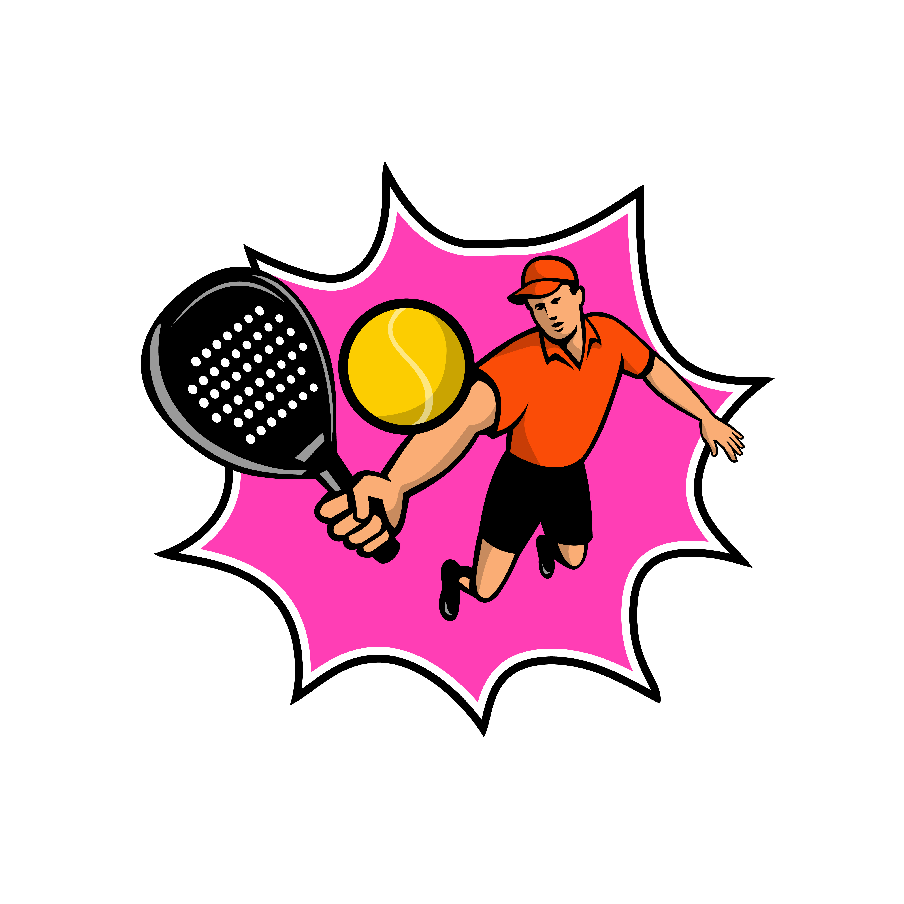
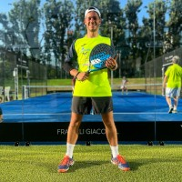
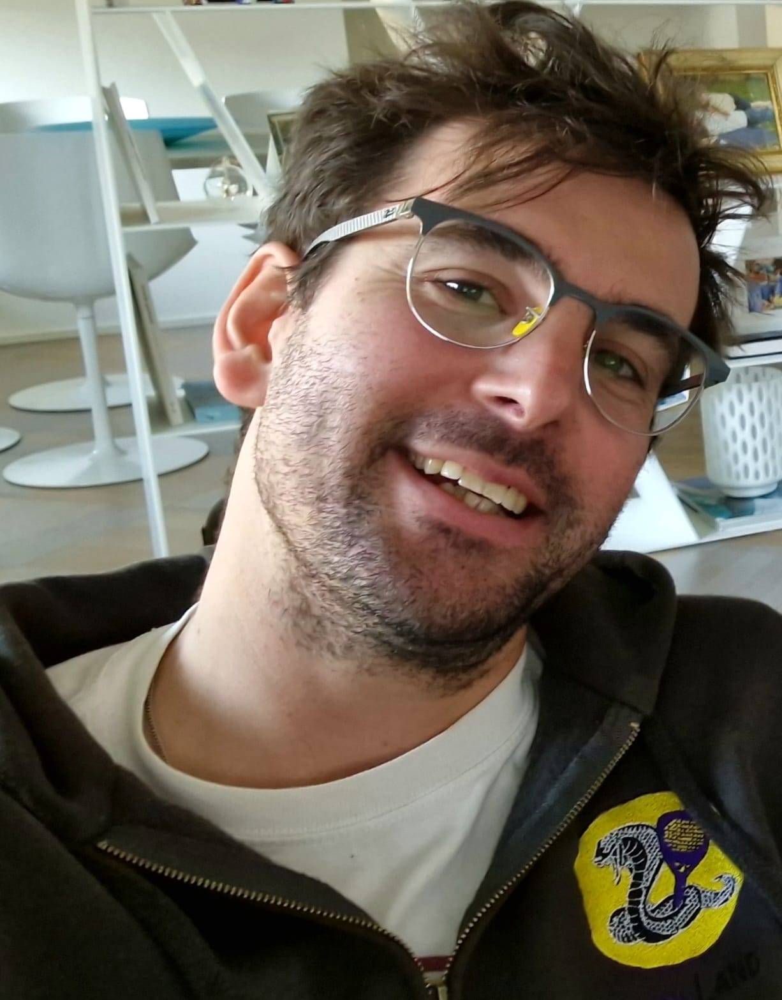
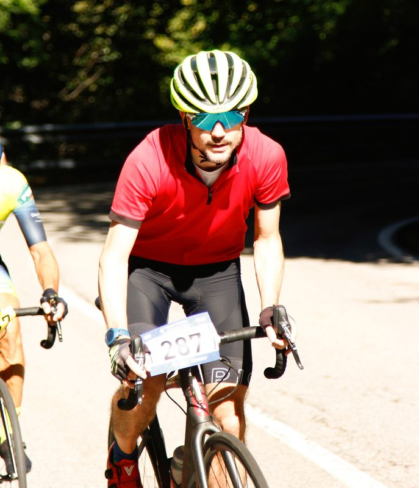

Istruttore federale FITP e responsabile di Padeland Milano, Antonio dirige le attività del centro e dell'academy. Coordina l'offerta formativa per tutti i livelli — dai corsi amatoriali al settore agonistico — e co-gestisce l'organizzazione dei tornei interni. È il punto di riferimento per i soci e garantisce la qualità dell'esperienza sportiva in ogni aspetto della struttura.

Maestro Nazionale FITP, Diego è il riferimento tecnico per il settore agonistico di Padeland Milano. Responsabile dei corsi agonistici e delle squadre di serie D della Padeland Milano Academy, porta un'elevata competenza tecnica al servizio dei giocatori più ambiziosi. Collabora con Antonio Alleva nella gestione e organizzazione dei tornei del centro.

Co-fondatore e socio di Padeland Milano, Massimiliano si occupa della gestione amministrativa del centro. Il suo contributo è fondamentale nell'organizzazione quotidiana della struttura e nella costruzione di partnership, tra cui quella con Macron.

Co-fondatore di Padeland Milano e presidente dell'associazione sportiva dilettantistica PAMM Sportiva SRL. Andrea guida la visione strategica del centro, con l'obiettivo di rendere Padeland il punto di riferimento per il padel nella zona Sud-Est di Milano.
Vuoi far parte del team?
Siamo sempre alla ricerca di persone appassionate di padel. Se sei un istruttore FITP o hai esperienza nella gestione di centri sportivi, contattaci!
Contattaci